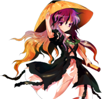

- Welcome to Touhou Wiki!
- Please register to edit. For assistance, check in with our Discord server or IRC channel.
Byakuren Hijiri
Byakuren Hijiri çid͡ʑiɽʲi bʲakɯɽeɴ (♫) Byakuren Hiziri | |
|---|---|
|
Byakuren Hijiri in Antinomy of Common Flowers The Sealed Great MagicianMore Character Titles | |
| Species | |
| Abilities |
Magic (specialization in magic that increases her physical abilities) |
| Age |
Over 1100 years old |
| Occupation | |
| Location | |
Music Themes | |
| |
Appearances | |
| Official Games | |
| |
| Print Works | |
| |
Byakuren Hijiri (聖 白蓮 Hijiri Byakuren) is a Buddhist nun and magician who was sealed away by humans because of her kindness towards youkai in the outside world. During the events of Undefined Fantastic Object, the youkai she has saved reappear to break her free from the seal. She is now the head priest at the Myouren Temple, which is populated mostly by youkai.
General Information[edit]
Byakuren first appeared as the final boss of Undefined Fantastic Object, later appearing as a playable character in Hopeless Masquerade and Urban Legend in Limbo. She was a target for Stage 12 of Double Spoiler and the Final Day of Impossible Spell Card.
Personality[edit]
Byakuren is a monk who is kind to both humans and youkai. However, it is somewhat difficult for her to befriend humans because of these views, as well as the fact that she doesn't drink alcohol and is a vegetarian. She is mild-mannered and has never been seen to be overly angry. Youkai that don't desire conflict flock to her, while those that do are repulsed by her.
Abilities[edit]
- Using magic
Originally derived from Buddhism, Byakuren then began using dark magic derived from aiding youkai to retain her youth, after her brother's death. Now, Byakuren specializes in "buffing" magic which increases her physical abilities, including strength, speed, and the five senses. In Undefined Fantastic Object, the spell card Superhuman "Byakuren Hijiri" seems to demonstrate this magic. During this spell, Byakuren's movement speed increases to such an extent that she can even outrun Fantasy Seal. Normally, however, she's only as strong as an average human. Ultimately, though she is called a saint, these powers are demonic in nature.
Occupation[edit]
Byakuren is the chief priest at the Myouren Temple, where her main goal is to bring peace to both humans and youkai. As the chief priest, she teaches the dharma to anyone willing to listen. She also manages funerals and the graveyard. Once a month, she performs an "overnight sutra-chanting live concert", where she sings a song in monotone while keeping rhythm with a wooden fish. The event attracts both youkai and humans.
Possessions[edit]
- Sorcerer's Sutra Scroll
Created while Byakuren was in Makai, the Sorcerer's Sutra Scroll is unique to her. The sutras Byakuren needs in order to use her power are written on it. It has an automatic mode, which will cause it to recite spells on its own. Compared to a regular paper scroll, the amount the Sorcerer's Sutra Scroll holds is limitless. It is also said that this scroll won't deteriorate over time. Lastly, because it has a "will" of its own, no one except for Byakuren is able to handle it.
Backstory[edit]
Once a human, Byakuren was a nun who worked with her younger brother, Myouren Hijiri. However, when her brother died, she began to fear death. This fear prompted her to search for some way to maintain her youth. Eventually she did find it; however, its origin was not in the Buddhist art she had dedicated her life to, but rather a kind of black magic.
No longer fully "human", she soon came to fear losing her power. Because of the nature of the world of Gensokyo, the magic that she wielded would only be lost if humanity came to reject it as a whole; and because of that, she needed to ensure the prosperity and longevity of youkai. Thus, she came to honor and protect the youkai for her own benefit while simultaneously making herself out to be a great youkai exterminator. People came to look up to her and started fearing the youkai less and less. However, after some time, Byakuren started to realize the struggle youkai faced in the outside world. Eventually, rather than protecting them out of her own selfishness, she began to honestly consider the youkai as beings that needed to be helped.
At one time, Byakuren was sent to exterminate the ghost on the seas, Minamitsu Murasa, who had gained much infamy for sinking ships. Rather than vanquish Murasa as she had been sent to do, Byakuren confronted the spirit as a normal human, and Murasa easily capsized her ship. However, Byakuren rose from the sea, riding atop a shining ship like the one Murasa had fallen from. By granting Murasa this ship, she freed the spirit from the cursed oceans and earned her gratitude.
At some point she also welcomed Ichirin Kumoi and her nyuudou companion Unzan, gaining their trust as well. The two of them lived at her temple.
The temple that she lived in was in the mountains; a temple to the god Bishamonten. In order to gain the trust of the youkai living on the mountain, she decided to appoint a youkai to serve under the god. This youkai was Shou Toramaru. Shou excelled at her duties, and it is implied that in doing so, Byakuren came to be liked by the youkai living around the area.
Eventually, her desire to help youkai rather than exterminate them was exposed to humans such as with her encounter with Murasa. She was ostracized for being a "demon in human form", and eventually was sealed away into the depths of Makai, forever locked in Hokkai.
Background Information[edit]
Myouren Hijiri, Byakuren's younger brother, was a real Buddhist priest born in Shinano Province, which is ZUN's hometown, and trained at Chougosonshi Temple (朝護孫子寺) on Mount Shigi (信貴山). He appears in several stories, but the most significant one is Shigisan Engi, which is one of the most popular emakimono. In its third volume, there is an unnamed Buddhist priestess who wants to meet Myouren, who is her younger brother. She is the inspiration for Byakuren. The priestess is looking for Myouren because she is worried about him not coming back, so she stays at Toudaiji, where Myouren had made the vows for priesthood. Daibutsu tells her in a dream that there is a purple cloud over the side of the mountain southwest from where she is. She goes there the next morning, and finally she is able to meet and live together with him.
Name[edit]
Byakuren Hijiri (聖 白蓮) is her name. Hijiri (聖) can mean "Saint", "Virtuous Monk" or "Itinerant Monk" whilst Byakuren (白蓮) can mean "White Lotus" or "Purity". So it literally can be read as "Saint of the White Lotus" or "White Lotus Saint"; drawing upon the cultural reading of the white lotus as a symbol of purity – "Pure and Saintly" or "Saint of Purity". It may also be drawing upon the modern definition of Hijiri (聖, meaning a world-trekking Buddhist monk) – "Roaming Monk of the White Lotus" or "The Pure and Itinerant Monk".
Design[edit]
In Undefined Fantastic Object's official art, Byakuren has long, wavy, light brown hair that fades to purple at the top, with hazel or light brown eyes. She wears a black and white dress with long strips of black fabric going across the middle and white fabric across the arms. Along with this dress, she wears a long cape. She also holds a giant, magical scroll called the Sorcerer's Sutra Scroll.
From Hopeless Masquerade onward, she wears a wide-brimmed hat and shiny green beads.
The gradient in her hair has been confirmed by ZUN to be a natural colour.[1]
Story[edit]
| Attention: This section is a stub and it needs expanding with more information related to the section's topic. If you can add to it in any way, please do so. |
- Undefined Fantastic Object
In Undefined Fantastic Object, she is unsealed thanks to the combined efforts of Shou Toramaru's group of youkai and the heroine. Her fate depends on which heroine is chosen by the player, but in canon, she settles down near the Human Village with the intentions of building a temple there. By Sanae Kochiya's request – the shrine maiden had vouched for Byakuren's character – Kanako Yasaka and Suwako Moriya constructed it for her relatively quickly.
- Impossible Spell Card
- Main article: Impossible Spell Card: Story
After apparently reading the newspaper by the tengu about a mischief-making amanojaku, she becomes one of the many strong youkai and humans to try and stop Seija Kijin in the final day. She uses spell cards that are considered impossible to dodge.
Relationships[edit]
Being the final boss of Undefined Fantastic Object, Byakuren serves as the common ground for the character relationships.
Ichirin Kumoi is a youkai who used to live at Byakuren's temple hundreds of years ago. By showing kindness to both her and Unzan, even though she was human, she earned their trust.
Byakuren saved Minamitsu Murasa from her grim fate of haunting the oceans and capsizing ships. Minamitsu became one of Byakuren's strongest allies, and she used the flying object in Gensokyo to retrieve the treasures needed to revive the nun.
Shou Toramaru was a disciple of Bishamonten that lived at Byakuren's temple. Byakuren had used her to gain more trust from the other youkai living on the mountain at the time, and in order to show her kindness towards youkai.
It is also known from both Touhou Hisoutensoku and Oriental Sacred Place that Nue Houjuu is currently living at the temple she built. Nue, after learning from the heroine during the extra stage of Undefined Fantastic Object of Byakuren's kindness to all beings, including youkai like her, went there, most likely after a bit of time had passed and nervous because she was attempting to ruin the plans to unseal the nun in the first place. Also, Nue calls in her friend Mamizou Futatsuiwa from the outside world to become a youkai ally. After being suggested by Youmu Konpaku in her respective Extra stage, she decides to take up residence at Myouren Temple with Nue.
She also had a brother named Myouren Hijiri. However, her brother eventually died.
Kyouko cleans the Myouren Temple.
Miko targets Byakuren. While they have not been seen interacting, Byakuren is highly disturbed by Seiga's activities and claims that she can sense great evil from her.[2]
Byakuren believes that Koishi's present "thoughtless" state is close to enlightenment, and wants her to join the temple.[3]
During the events of Hopeless Masquerade, Kokoro stays at Myouren Temple in order to learn how to control her emotions in order to prevent another berserk at the end of Byakuren's storyline.
Gallery[edit]
Cover of Undefined Fantastic Object, featuring Byakuren's silhouette
Byakuren artwork from Undefined Fantastic Object
Byakuren artwork from Hopeless Masquerade
Byakuren artwork from Urban Legend in Limbo
Byakuren artwork from Urban Legend in Limbo
Byakuren cameo in Oriental Sacred Place
Illustration of Byakuren in Symposium of Post-mysticism

Byakuren in Symposium of Post-mysticism
Byakuren with Miko & Marisa in Symposium of Post-mysticism
Skills[edit]
| Name | Translated | Comments | Games | Usage | ||
|---|---|---|---|---|---|---|
| Total: 10 | ||||||
| ハヌマーンの舞 | Hanuman's Dance | Buddhism-aligned | HM ULiL AoCF |
Equippable 5C 5C | ||
| ヴィールパークシャの目 | Virupaksa's Eyes | Shinto-aligned | HM ULiL AoCF |
Equippable 8C 8C | ||
| インドラの雷 | Indra's Thunder | Shinto-aligned | HM ULiL AoCF |
Equippable 2C 2C | ||
| スカンダの脚 | Skanda's Legs | Taoism-aligned | HM ULiL AoCF |
Equippable 6C 6C | ||
| ヴィルーダカの剣 | Virudhaka's Sword | Taoism-aligned Not named in ULiL or AoCF |
HM ULiL AoCF |
Equippable Charged B attack Charged B attack | ||
| ガルーダの爪 | Garuda's Talons | Buddhism-aligned | HM ULiL AoCF |
Equippable J5C J5C | ||
| ドゥルガーの魂 | Durga's Soul | Buddhism-aligned | HM ULiL AoCF |
Equippable 4C 4C at middle of screen | ||
| シルバースカイウェイ | Silver Skyway | Aided by Occult Ball | ULiL AoCF |
A+B with Occult Ball A+B with Occult gauge | ||
| 詠唱 | Chant | Not named in ULiL | ULiL AoCF |
5C without a move already charged | ||
| ガンガーの一滴 | Ganga's Droplet | AoCF | 4C at top or bottom of screen | |||
Spell Cards[edit]
| Name | Translated | Comments | Games | Stage | ||
|---|---|---|---|---|---|---|
| Total: 38 | ||||||
| 魔法「紫雲のオーメン」 | Magic "Omen of Purple Clouds" | UFO | St. 6: E/N | |||
| 吉兆「紫の雲路」 | Good Omen "Cloudy Way in Purple" | UFO | St. 6: H | |||
| 吉兆「極楽の紫の雲路」 | Good Omen "Nirvana's Cloudy Way in Purple" | UFO | St. 6: L | |||
| 魔法「魔界蝶の妖香」 | Magic "Mystic Fragrance of a Makai Butterfly" | UFO | St. 6: E/N | |||
| 魔法「マジックバタフライ」 | Magic "Magic Butterfly" | UFO | St. 6: H/L | |||
| 光魔「スターメイルシュトロム」 | Light Magic "Star Maelstrom" | UFO | St. 6: E/N | |||
| 光魔「魔法銀河系」 | Light Magic "Magic Milky Way" | UFO | St. 6: H/L | |||
| 大魔法「魔神復誦」 | Great Magic "Devil's Recitation" | UFO | St. 6: E/N/H/L | |||
| 「聖尼公のエア巻物」 | "Amagimi Hijiri's Air Scroll" | UFO | St. 6: N/H | |||
| 超人「聖白蓮」 | Superhuman "Byakuren Hijiri" | UFO ULiL |
St. 6: L Story (Extra) | |||
| 飛鉢「フライングファンタスティカ」 | Flying Bowl "Flying Fantastica" | UFO | St. 6: E/N | |||
| 飛鉢「伝説の飛空円盤」 | Flying Bowl "Legendary Flying Saucer" | UFO | St. 6: H/L | |||
| 「遊行聖」 | "Yugyou Hijiri" | DS | St. 12 | |||
| 習合「垂迹大日如来」 | Syncretism "Manifestation of Mahavairocana" | DS | St. 12 | |||
| 「スターソードの護法」 | "Star Sword Apologetics" | DS | St. 12 | |||
| 天符「三千大千世界の主」 | Heaven Sign "Master of the Great Trichiliocosm" | HM ULiL AoCF |
Use Use Use | |||
| 天符「大日如来の輝き」 | Heaven Sign "Brilliance of Mahavairocana" | HM ULiL AoCF |
Use Use Use | |||
| 天符「釈迦牟尼の五行山」 | Heaven Sign "Five-Element Mountain of Shakyamuni" | HM ULiL AoCF |
Use Use Use | |||
| 「アーンギラサヴェーダ」 | "Angirasa Veda" | HM | Use-LW | |||
| 杵符「ヴァジュラパーニの呪文」 | Pestle Sign "Vajrapani's Incantation" | HM | Story | |||
| 超人「ガルーダの翼」 | Superhuman "Garuda's Wings" | HM | Story | |||
| 「ハリの制縛」 | "Binding Laws of Hari" | ISC | St. 10 | |||
| 「ブラフマーの瞳」 | "Eyes of Brahma" | ISC | St. 10 | |||
| ＊１００キロで空を駆けろ！＊ | *Race Through the Sky at 100 kph!* | ULiL AoCF |
Use-LW Use-LW | |||
| 超音速「老婆のスプリント」 | Supersonic Speed "Old Lady's Sprint" | ULiL | Story | |||
| ＊ハイウェイターボエアターン＊ | *Highway Turbo Air Turn* | ULiL | Story | |||
| ＊ターボババァ走死走愛＊ | *Turbo Granny Rides for Her Life* | ULiL | Story | |||
| 光符「インドラのヴァジュラ」 | Light Sign "Indra's Vajra" | ULiL | Story (Extra) | |||
| 超人「大追跡！ブディストライダー」 | Superhuman "Hot Pursuit! Buddhist Rider" | ULiL | Story (Extra) | |||
| 光撃符「君を導く王道のヴァジュラシュート」 | Light Strike Sign "Vajra Shoot of the Noble Path that Guides You" | Co-owner with Miko | AoCF | Story | ||
| 撃拳符「スカンダの怪雲拳」 | Strike Fist Sign "Skanda's Strange Cloud Fist" | Co-owner with Ichirin | AoCF | Story | ||
| 撃光符「スカンダの王道の威光」 | Strike Light Sign "Glory of Skanda's Noble Path" | Co-owner with Miko | AoCF | Story | ||
| 蹴斬符「ガルーダの聖徳斬」 | Kick Slash Sign "Garuda's Shoutoku Slash" | Co-owner with Miko | AoCF | Story | ||
| 光仙符「日出ずる国の僧侶と道士」 | Light Hermit Sign "Monk & Taoist of the Land of the Rising Sun" | Co-owner with Miko | AoCF | Story (Overdrive) | ||
| 光拳符「インドラのヴァジュラ怪雲拳」 | Light Fist Sign "Indra's Vajra Strange Cloud Fist" | Co-owner with Ichirin | AoCF | Story | ||
| 撃符「スカンダに追われる正夢」 | Strike Sign "Prophetic Dream of Pursuit by Skanda" | Used by Byakuren's Dream World self | AoCF | Story | ||
| 星神符「十七条の超人」 | Star Divine Sign "Superhuman of Seventeen Articles" | Co-owner with Miko | VD | Nightmare Sunday - 2 | ||
| 紅星符「超人ブラッディナイフ」 | Scarlet Star Sign "Superhuman Bloody Knife" | Co-owner with Remilia | VD | Nightmare Sunday - 3 | ||
| 紅星符「超人カタストロフ行脚」 | Scarlet Star Sign "Superhuman Catastrophe Pilgrimage" | Co-owner with Flandre | VD | Nightmare Sunday - 6 | ||
Additional Information[edit]
- The silhouette of Byakuren occupies the front of Undefined Fantastic Object's jewel case.
- Byakuren was one of the candidates for the extra boss of Ten Desires, along with Kasen Ibaraki.
- Written in ZUN's hand on her final cut-in is Namusan! (南無三！), which is short for Namu Sanbou (南無三宝) - roughly, "Hail to the three treasures of Buddhism" (the Buddha, Dharma, and Sangha). It's used to request salvation in a moment of danger. Byakuren also uses this term at the very end of her dialogue with the heroine.
- During her second-to-last (fourth) spell card on Easy, the stars under the health bar show she has two lives left. She does, but only on higher difficulties.
- The same spell card looks like one of Shinki's attack patterns.
- Byakuren's Lotus Butterfly seems to be a reference to YuugenMagan's evil eyes. The two share a similar presentation and shoot similar danmaku patterns. This, of course, makes sense as Byakuren, like YuugenMagan, appears in Makai.
- In Undefined Fantastic Object, Byakuren has no hitbox after her third spell card. This is likely a glitch.
- In Oriental Sacred Place chapter 12, Byakuren's hair is lighter on the top and gets darker towards the bottom.
- With Miko's appearance and revealed conflict with Byakuren with their use of Buddhism they show signs of being a reference to Hokuto No Ken where Byakuren is Toki, a peace loving pacifist that wants only to help people and hates violence when it can be avoided, Miko is Raoh in this case.
- Byakuren's friendliness towards youkai and her ability shows some similarity to Xuanzang, a monk who was sent to retrieve the Sutras from India in Journey to the West.
Fandom[edit]
Official Profiles[edit]
|  | 霊長類を越えた阿闍梨 聖白蓮
命蓮寺は人で賑わっていた。 特技 超人の血統 必殺技を出す前に詠唱が必要という特徴があります。 ラストワード アーンギラサヴェーダ 突進で相手を弾き飛ばし、レーザーの集中照射で |
Acharya who Surpassed the Primates, Hijiri Byakuren
The Myouren Temple was bustling with people. Special skill: Lineage of the Superhuman Before activating a special attack, Byakuren must first recite a chant. Last Word: Atharsaveda Byakuren charges forward and knocks her opponent back, and using concentrated laser fire |
Official Sources[edit]
- 2009/08/15 Undefined Fantastic Object - Stage 6 dialogue; various stage dialogue; all endings; Settings and Extra Story.txt (official profile)
- 2009/08/15 Touhou Hisoutensoku - Reimu's VS dialogue with Marisa
- 2010/03/14 Double Spoiler - Stage 12 spellcard comments
- 2010/12/25 Oriental Sacred Place - Chapter 12
- 2011/11/25 Ten Desires special and two-part interview with ZUN
- 2012/04/27 Symposium of Post-mysticism - Byakuren Hijiri
- 2013/05/26 Hopeless Masquerade
References[edit]
- ↑ Comment on Yamu's blog (NSFW) on 2009/09/24 at 18 o'clock―俺的というか、神主的に髪の毛自体の色って言ってた。（夏コミ直後に話す機会があった時、真っ先に聞いたｗ）
- ↑ Symposium of Post-mysticism: Part 5
- ↑ Symposium of Post-mysticism: Part 4
| This page is part of Project Characters, a Touhou Wiki project that aims to write proper descriptions for all official characters of Touhou Project. Please keep the character page guidelines in mind when contributing. |